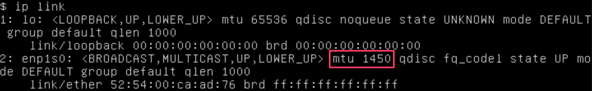
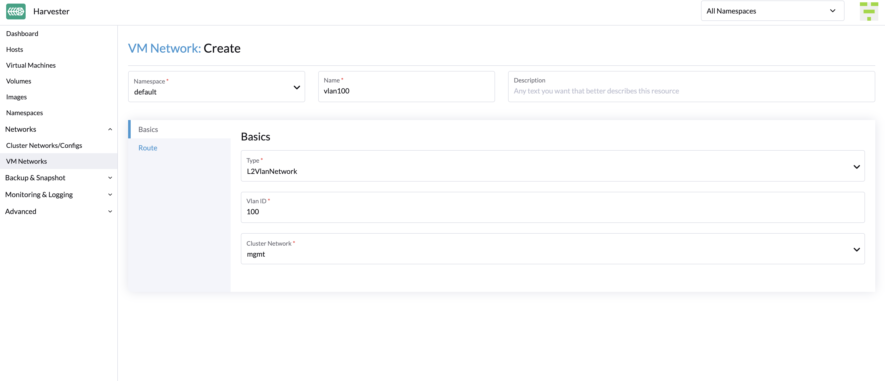
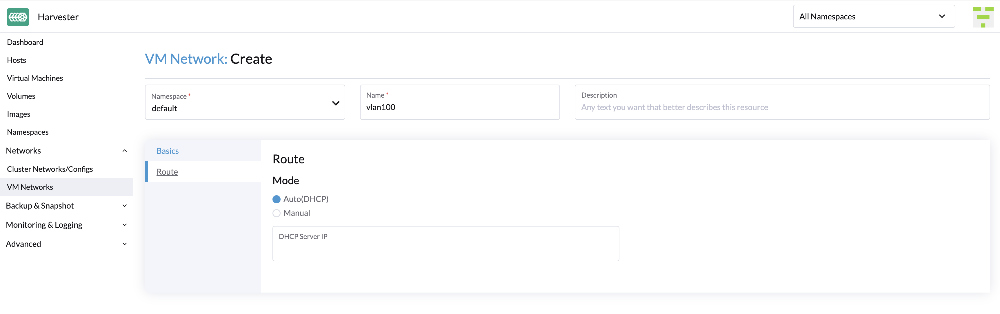
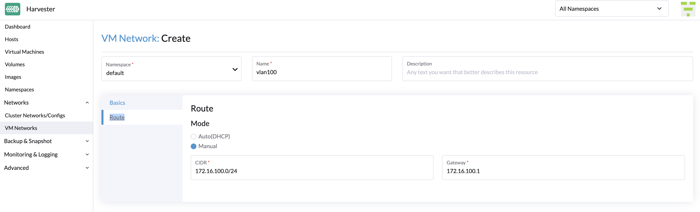

VM Network
Harvester provides three types of networks for virtual machines (VMs), including:
-
Management Network
-
VLAN Network
-
Untagged Network
The management network is usually used for VMs whose traffic only flows inside the cluster. If your VMs need to connect to the external network, use the VLAN network or untagged network.
Harvester also introduced storage networking to separate the storage traffic from other cluster-wide workloads. Please refer to the storage network document for more details.
Management Network
Harvester uses Canal as its default management network. It is a built-in network that can be used directly from the cluster. By default, the management network IP of a VM can only be accessed within the cluster nodes, and the management network IP will change after the VM reboot. This is non-typical behaviour that needs to be taken note of since VM IPs are expected to remain unchanged after a reboot.
However, you can leverage the Kubernetes service object to create a stable IP for your VMs with the management network.
How to use management network
Since the management network is built-in and doesn’t require extra operations, you can add it directly when configuring the VM network.
|
Network interfaces of VMs connected to the management network have an MTU value of

If any of your workloads involve transmission of network traffic, you must specify the appropriate MTU value for the affected VM network interfaces and bridges. |
VLAN Network
The Harvester network-controller leverages the multus and bridge CNI plugins to implement its customized L2 bridge VLAN network. It helps to connect your VMs to the host network interface and can be accessed from internal and external networks using the physical switch.
Create a VM Network
-
Go to Networks > VM Networks.
-
Select Create.
-
Configure the following settings:
-
Namespace
-
Name
-
Description (optional)
-
-
On the Basics tab, configure the following settings:
-
Type: Select L2VlanNetwork.
-
Vlan ID
-
Cluster Network

-
-
On the Route tab, select an option and then specify the related IPv4 addresses.
-
Auto(DHCP): The Harvester network controller retrieves the CIDR and gateway addresses from the DHCP server. You can specify the DHCP server address.
 -
Manual: Specify the CIDR and gateway addresses.
Harvester uses the information to verify that all nodes can access the VM network you are creating. If that is the case, the Network connectivity column on the VM Networks screen indicates that the network is active. Otherwise, the screen indicates that an error has occurred.
-
Create a VM with VLAN Network
You can now create a new VM using the VLAN network configured above:
-
Click the Create button on the Virtual Machines page.
-
Specify the required parameters and click the Networks tab.
-
Either configure the default network to be a VLAN network or select an additional network to add.
Untagged Network
As is known, the traffic under a VLAN network has a VLAN ID tag and we can use the VLAN network with PVID (default 1) to communicate with any normal untagged traffic. However, some network devices may not expect to receive an explicitly tagged VLAN ID that matches the native VLAN on the switch the uplink belongs to. That’s the reason why we provide the untagged network.
How to use untagged network
The usage of untagged network is similar to the VLAN network.
To create a new untagged network, go to the Networks > VM Networks page and click the Create button. You have to specify the name, select the type Untagged Network and choose the cluster network.
|
Starting from Harvester v1.1.2, Harvester supports updating and deleting VM networks. Make sure to stop all affected VMs before updating or deleting VM networks. |